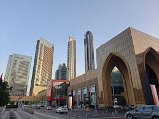
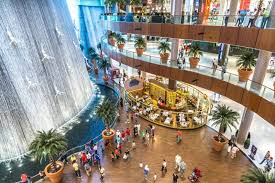

The Dubai Mall, located in the heart of downtown Dubai, is not only one of the largest malls in the world but also a global icon of shopping, entertainment, and leisure. Covering an impressive 1.1 million square meters, the mall is home to over 1,200 retail outlets, ranging from luxury boutiques to popular high-street brands, making it a premier shopping destination. Beyond its retail offerings, the mall boasts a range of world-class attractions that cater to every interest. The Dubai Aquarium and Underwater Zoo is one of the largest suspended aquariums in the world, home to thousands of marine animals, including sharks and rays. The Dubai Ice Rink offers a cool escape for skating enthusiasts, while the VR Park provides immersive virtual reality experiences. For movie lovers, the mall features a state-of-the-art cinema, and visitors can enjoy the stunning views of the Dubai Fountain , which offers spectacular water shows set to music, right outside the mall. Dining at the Dubai Mall is a culinary adventure, with over 200 dining options ranging from fine dining to casual eateries, serving international cuisine from around the world. Additionally, the mall is linked to the iconic Burj Khalifa , the tallest building in the world, offering breathtaking views of the city from its observation deck. The Dubai Mall also hosts a variety of events throughout the year, including fashion shows, concerts, and seasonal festivals, attracting millions of tourists and locals annually. With its combination of retail, entertainment, and cultural experiences, the Dubai Mall has become a must-visit destination for anyone in Dubai.
At Dubai Mall, you can explore world-class shopping options, dine in numerous international restaurants, and enjoy exciting entertainment. Whether you're visiting the aquarium, ice rink, or enjoying a movie at the cinema, there’s always something to keep you entertained. The Dubai Fountain outside the mall also provides a mesmerizing water show that is a must-see for visitors.